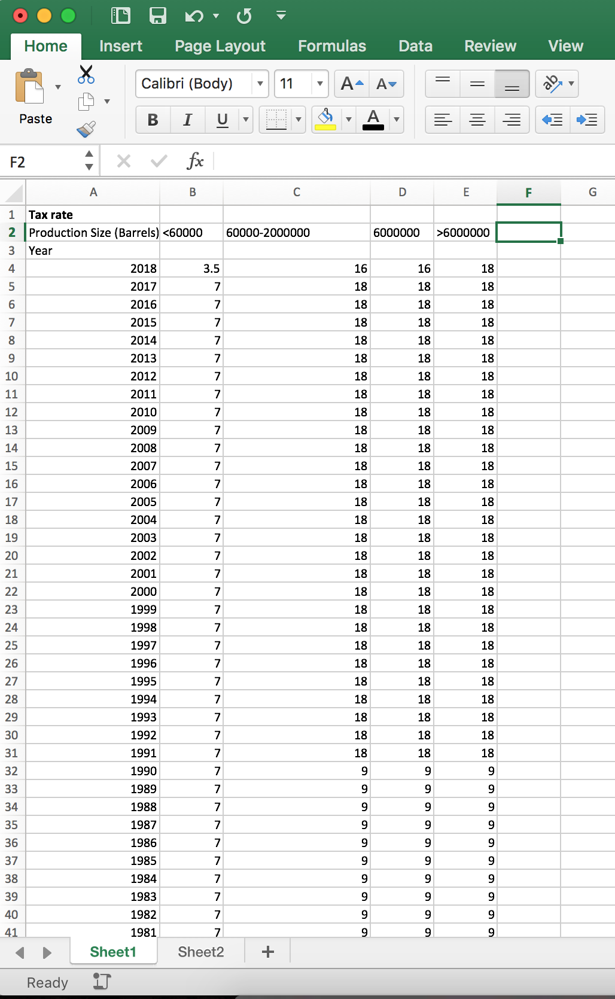
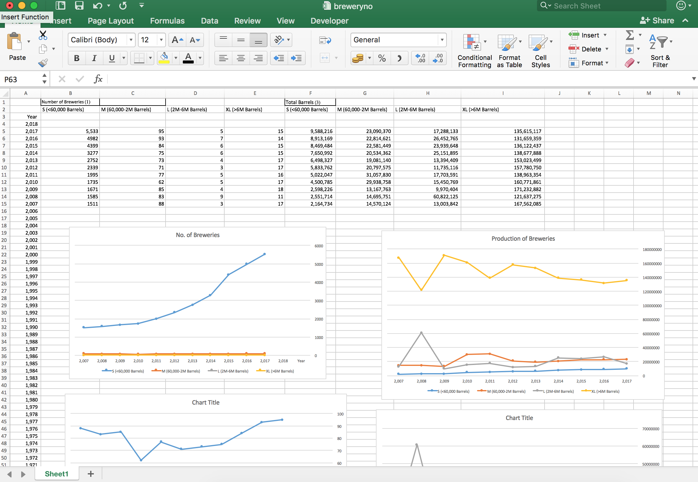

With regards to my studio project, I am interested in the beer industry in terms of the development of breweries and beer production. During the early research stage, I have collected data related to the beer industry with the following information.
No. of breweries
Size of breweries
Export
Consumed on brewery premises
Malt, Corn, rice, barley, wheat Consumption
Hops
Tax rate on different barrel quantities
Launch of Farm Brewery Law and Farm Brewery License
The definition of craft beer being defined by the Brewers Association changes
 
Brewery Count by state (US)
https://catalog.data.gov/dataset/brewery-count-by-state-1984-september-30-2017/resource/d209bf07-cda7-4901-a6c7-0277579dacc4
Brewery Size and Production
https://www.ttb.gov/beer/beer-stats.shtml
Tax Rate
https://www.ttb.gov/tax_audit/taxrates.shtml#Beer
https://www.ttb.gov/tax_audit/94a01_4.shtml
Tax
https://www.ttb.gov/tax_audit/tax_collections.shtml
License (NY state)
https://catalog.data.gov/dataset/liquor-authority-quarterly-list-of-active-licenses
Employment
https://www.census.gov/epcd/susb/1999/us/US4453.HTM
For initial proposals, I designed 3 possible directions to represent the multiple sets of data to draw trends and relationships over the years. They aim to formulate a story about the beer industry, covering different aspects- from brewery numbers, beer production, production materials and licenses. From my analysis, the number of breweries increases in recent years. In specific, small-scale breweries increases while large-scale breweries remains unchanged or decreases slightly. This change is caused by the launch of specific license types (e.g. farm breweries) and the reduction of tax on small breweries. This shows a change in policy and economic measures affecting the trend. In terms of production materials, there is increase in hop consumption. This could be due to the change in tastes of beer consumers, leading to high demands of dry hops into creating specific beer types and flavors.
One direction is to focus on the relationships of different data. Allowing users to select specific data sets to be displayed thus show the relationships or independence of data.
Reference:
https://theintercept.com/2016/04/22/googles-remarkably-close-relationship-with-the-obama-white-house-in-two-charts/
Another direction would be focusing on the user more specifically by allowing the user to enter information, so that the data would be displayed in relation to the user. For example, users can type in the ʹstateʹ to display data of a specific state to find out the brewery or beer information.
Reference:
https://flowingdata.com/2015/09/23/years-you-have-left-to-live-probably/
http://flowingdata.com/projects/2016/alcohol-world/
This proposal focuses on the part to whole relationship of data sources. By showing the general trends and big numbers of the beer industry, then zooming into the breakdowns of detailed informations (e.g. malt, barley, corn consumption). Users get to see the big picture and the small details respectively.
Reference:
https://www.theguardian.com/politics/ng-interactive/2016/jun/23/eu-referendum-live-results-and-analysis
To arouse the interest of viewers in knowing more about the story of the beer industry, the final direction starts by allowing viewers to start from their favourite beer style. The visualisation lists out a number of different beer styles thus allow viewers to start the journey from a more personal perspective. The information is therefore more tailored towards the selected beer style by displaying the selected beer sales.
Viewers can then understand the ingredient consumption by having a sense of the ʹMalt levelʹ and ʹHop levelʹ of their favourite beer. For instance, IPA has a high hop level and is getting more popular in recent years. The hop consumption is rising dramatically as a result and viewers would understand where oneʹs personal taste is within the larger market trend and the effect on production industry.
As an early test of representation, the collected data of different information covers different number of years (some longer 1984-2017, some shorter 2007-2017). The inconsistent data creates difficulty in representing the information on the same graph/ timeline.
After consolidating the key policy/ tax events, it is found that most of them happen to lie within the 2007-2017 period. The designated period also has complete sets of data to allow consistent representations. Instead of spanning across long time period with bits and pieces of data, the final representation focuses on 2007-2017, which is more recent and better in showing trends but also event changes.
At the beginning, I intend to show multiple related information (e.g. S,M,L,XL breweries) on the same graphs to reduce the number of graphs to be drawn. However, the range of numbers varies across different categories. S breweries ranges from 1000 to 5600 whereas XL breweries ranges only from 10 to 20. Representing the two information on the same graphs with the same y-axis would distort and flatten the change of XL breweries. At the same time, showing multiple data on the same graph would need a larger graph size on screen for displaying the details. However, one can no longer see the bigger picture with the selected beer/ timeline after scrolling down to see more information.
Due to the constraints of the screen and the intention to construct viewerʹs awareness of part to whole information, I decided to split the individual data sets into separate small graphs. Each graphsʹ y-axis can be adjusted to best represent the information. Related data sets are put side by side in a row to better help viewers relate individual information. From top to bottom, the first row shows beer sales, production and ingredient consumption. Second row shows the hop industry and the third row shows the number of breweries at different scales.
Graphically, I collected some graphic and color references to explore the styles of customized view of selected beers. Pinning down onto simple graphics and shades of beer colors to distinguish between different beer styles helps to emphasize the customization of the data visualisation.
The early proposal involves a turquoise background but later on I changed to a more light grey shade to allow more flexible color usage on texts/ graphs. In the middle of the process, all graphs used the same dark grey for lines and texts. I adjusted the overall usage of colors by switching ‘hop’ related graphs into green, which resembles the ‘hop level’ icons. At the same time, the policy bar adopts the same color to show the relationship between the hop farm industry and the launch of farm brewery law. The usage of limited colors help to group some of the graphs and information. Thus, viewers would be not overwhelmed by too many graphs but to be able to see groups information instead.
If there is more time, I would play more with the animations of the graphs. It would be interesting to animate the graphs to move through the years simultaneously. It would emphasize the time element of the story a bit more and bring the viewers through the 10 years period from start to end.